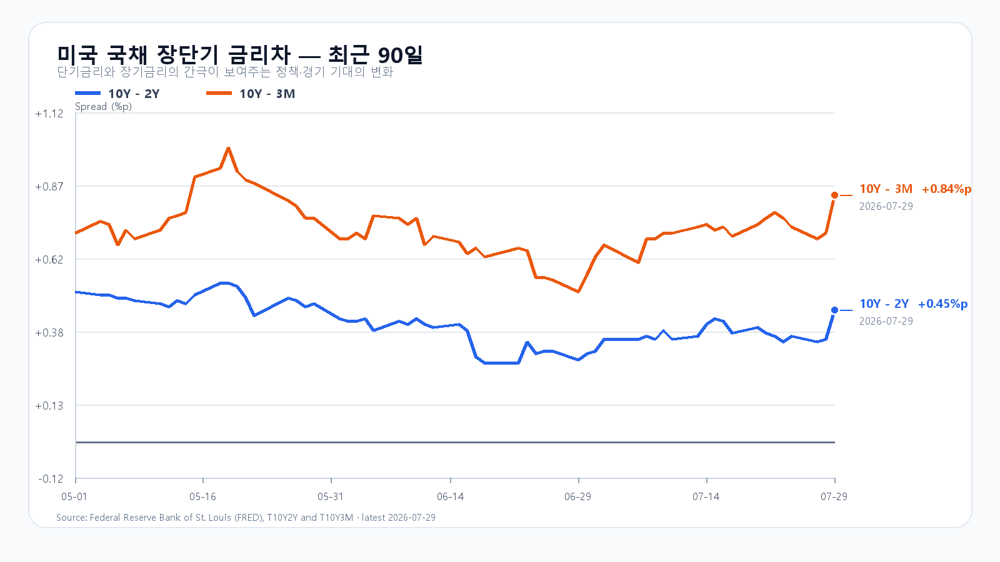

아침의 한 문장
AI 인프라 수요는 Microsoft 실적으로 확인됐지만, 금리와 반도체 주가의 부담이 더 빨리 움직인 아침입니다.
코스피는 09:11 기준 5,725.74로 전일보다 1.10% 올랐습니다. 장중 저가 5,572.10에서 반등했지만, 삼성전자와 SK하이닉스의 방향은 갈렸습니다. 삼성전자는 213,000원으로 2.16% 상승한 반면 SK하이닉스는 1,364,000원으로 2.64% 하락했습니다.
이 차이는 메모리 수요의 붕괴보다, 미국에서 먼저 나타난 메모리주 매도와 실적 발표 뒤 달라진 기대치의 차이에 가깝습니다. 달러/원은 1,439원대로 전일보다 낮아 주식 변동성이 외환 불안으로 옮겨간 모습은 아직 제한적입니다.
수요가 강하다는 사실과 주가가 곧바로 오르는 일은 같은 일이 아닙니다. 오늘은 그 간극이 시장을 움직입니다.
09:11 시장 대시보드
| 항목 | 현재 | 시가 | 고가 | 저가 |
|---|---|---|---|---|
| KOSPI | 5,725.74 | 5,681.77 | 5,725.74 | 5,572.10 |
| 삼성전자 | 213,000원 | 214,000원 | 217,000원 | 206,500원 |
| SK하이닉스 | 1,364,000원 | 1,361,000원 | 1,389,500원 | 1,324,000원 |
| KODEX 레버리지 | 79,905원 | 78,850원 | 80,490원 | 75,280원 |
장중 시세: 네이버 금융 KOSPI·삼성전자·SK하이닉스·KODEX 레버리지. 장중 수치는 고정 시점 표시값입니다.
Microsoft가 확인한 AI 수요
Microsoft의 FY26 4분기 공식 발표는 AI 인프라 수요가 단순 기대에 머물지 않는다는 근거를 보탰습니다. 분기 매출은 900억 달러로 18% 늘었고, Microsoft Cloud 매출은 593억 달러로 27% 증가했습니다. Azure 및 기타 클라우드 서비스 매출은 43% 늘었습니다.
반도체와 메모리에는 좋은 조합입니다. 클라우드 매출이 함께 늘면 데이터센터 증설이 비용만 쌓이는 단계가 아니라 고객 매출로 이어지고 있다는 뜻이기 때문입니다. 서버용 DDR5·RDIMM, HBM, 기업용 SSD의 수요를 보는 데도 중요한 신호입니다.
다만 시장은 한 가지 질문을 더 합니다. 투자 규모가 커지는 속도만큼 현금흐름과 수익성이 따라오는가입니다. 그래서 미국 정규장에서는 QQQ가 2.04%, SOXX가 5.38%, Micron이 9.94% 하락했습니다. Microsoft 시간외 강세만으로 메모리주 전체의 가격 부담이 즉시 해소되지는 않았습니다.
동결보다 무거웠던 금리 경계
7월 FOMC 성명에서 연준은 정책금리를 3.50~3.75%로 유지했습니다. 하지만 세 명의 위원이 25bp 인상을 선호했습니다. 성명은 에너지 공급 충격과 높은 인플레이션도 언급했습니다.
장단기 금리차는 침체 경보를 보내는 모습이 아닙니다. FRED의 7월 29일 확정치에서 10년-2년 금리차는 +0.45%포인트, 10년-3개월은 +0.84%포인트입니다. 그러나 반도체 주가에는 금리차의 부호보다 10년물 4.61%라는 절대 수준이 더 직접적인 부담입니다.

출처: FRED 10Y-2Y, FRED 10Y-3M.
메모리 가격과 주가의 온도차
TrendForce DRAMeXchange의 7월 29일 18:10 GMT+8 업데이트에서 DDR5 16Gb 4800/5600은 50.933달러로 보합이었고, DDR4 16Gb 3200은 84.976달러로 0.03% 내렸습니다. DDR4 8Gb도 42.041달러로 0.09% 낮았습니다. 하락 폭이 아니라 높은 가격대에서의 숨 고르기에 가깝습니다.
| 품목 | 가격·변화 | 의미 |
|---|---|---|
| DDR5 16Gb 4800/5600 | 50.933달러 · 보합 | AI·서버 수요가 지지하는 고점권 |
| DDR4 16Gb 3200 | 84.976달러 · -0.03% | 공급 재배치 속 높은 가격 유지 |
| DDR3 4Gb | 13.810달러 · +0.52% | 레거시 제품의 상대 강세 |
| DDR5 RDIMM 32GB | 1,555달러 · +0.32% | 서버 메모리 수요의 최근 공개 신호 |
따라서 SK하이닉스의 약세를 곧바로 메모리 수요 악화로 읽기는 어렵습니다. 주식시장은 현재 가격보다 증설 이후의 공급, AI 투자수익률, 금리와 포지션 조정을 앞당겨 반영합니다. 삼성전자가 오르고 SK하이닉스가 내리는 오늘의 움직임도 이 차이를 보여줍니다.
오늘의 확인 순서
| 시각 | 이벤트 | 시장에 중요한 질문 |
|---|---|---|
| 7월 30일 10:00 | 삼성전자 2분기 실적 콜 | HBM·서버 DRAM·파운드리의 하반기 수요가 어떻게 설명되는가 |
| 7월 30일 21:30 | 미국 2분기 GDP·6월 PCE | 성장은 유지되는데 물가까지 강한가 |
| 7월 31일 06:00 | Amazon·Apple 실적 콜 | AWS 데이터센터 투자와 AI 수익화가 이어지는가 |
삼성전자는 앞서 2분기 잠정실적으로 매출 약 171조원, 영업이익 약 89.4조원을 제시했습니다. 잠정실적 발표보다 오늘 실적 콜에서 나올 제품별 수요와 공급 설명이 장중 반도체 흐름에 더 중요합니다. 미국 GDP·PCE 일정은 BEA가 공지한 시각을 따릅니다.
장중 시나리오
반등이 이어지는 경우
KOSPI가 전일 종가 5,663을 지키고 5,725 장중 고가를 넘어설 때입니다. 삼성전자가 217,000원 부근을 회복하고 SK하이닉스가 1,389,500원 고가를 다시 시험하며, 외국인 현물과 KOSPI200 선물이 같은 방향을 보여야 합니다.
가장 가능성 높은 경우
5,570~5,725의 넓은 범위에서 반도체 종목이 엇갈리는 흐름입니다. 삼성전자 실적 콜과 밤의 GDP·PCE를 앞두고, 지수 반등과 SK하이닉스의 약세가 동시에 이어질 수 있습니다.
다시 약해지는 경우
KOSPI가 5,572 장중 저점을 종가 기준으로 이탈하고, SK하이닉스가 1,324,000원 아래로 다시 밀리며, 달러/원이 1,450원 위로 빠르게 오르는 조합입니다. 이 경우 아침 반등은 수급 회복보다 단기 되돌림으로 해석해야 합니다.
오늘의 핵심은 반등의 크기보다 반도체 두 대형주가 같은 방향으로 돌아서는지, 그리고 밤의 물가가 장기금리를 다시 끌어올리는지입니다.
자주 묻는 질문
Microsoft 실적이 좋았는데 왜 반도체 주가는 약했나요?
Microsoft의 클라우드·Azure 성장률은 AI 수요에 긍정적입니다. 다만 FOMC의 긴축 경계와 10년물 4.6%대 금리는 고평가된 반도체의 할인율 부담을 남깁니다.
메모리 반도체 수급이 무너진 것인가요?
최신 공개 DRAM 현물가격은 DDR5·DDR4가 높은 수준을 유지하는 모습입니다. 현재 주가 조정은 즉각적인 현물 수요 붕괴보다 미래 증설, AI 투자수익률, 금리와 포지션 조정을 함께 반영한 결과로 읽는 편이 타당합니다.
오늘 무엇을 먼저 확인해야 하나요?
삼성전자 실적 콜의 HBM·서버 메모리 설명, SK하이닉스의 장중 저점 방어, 외국인 현물과 KOSPI200 선물의 동반 방향, 달러/원 1,450원 아래 안정 여부, 밤의 미국 GDP·PCE가 핵심입니다.
이 글은 공개 자료와 고정 시점 시세를 바탕으로 작성한 정보 자료입니다. 특정 상품의 매수·매도나 투자 성과를 보장하지 않습니다.